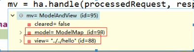

SpringMVC视图解析
1、方法执行后的返回值会作为页面地址参考，转发或者重定向到页面
２、视图解析器可能会进行页面地址的拼串；
视图解析的流程：
１.任何方法的返回值，最终都会被包装成ModelAndView对象

2、

视图渲染流程：将域中的数据在页面展示；页面就是用来渲染模型数据的；
3、
4、view和viewResolver
viewResolver的作用是根据视图名（方法的返回值）得到View对象。

5、怎么根据视图名得到View对象的
（1）视图解析器得到View对象的流程就是，所有配置的视图解析器都来尝试根据视图名得到View对象；如果得到就返回，得不到换下一个视图解析器。
（2）调用View对象的Render方法

所有数据都在隐含模型中。
internalresourceView的方法renderMergedOutputModel();

拿到转发器

转发操作


进入resolveViewName()方法：具体实现细节

进入createView方法：创建View对象


解析后得到两种view：一种是internalresourceview另一种是redirectview

一句话：
视图解析器只是为了得到视图对象，视图对象才能真正的转发（将模型数据全部放在请求域中）或者重定向到页面。从而渲染模型数据。
发送一个请求，直接到指定页面，
<!-- 定义无Controller的path<->view直接映射 -->
<mvc:view-controller path="/" view-name="redirect:${web.view.index}"/>
但是其他请求不能用了，解决方法是：开启MVC注解驱动模式
<mvc:annotation-driven > </mvc:annotation-driven>


改变视图解析器的优先级，需要实现Ordered接口，SpringMVC默认优先级最低，（数字越大优先级越低）。